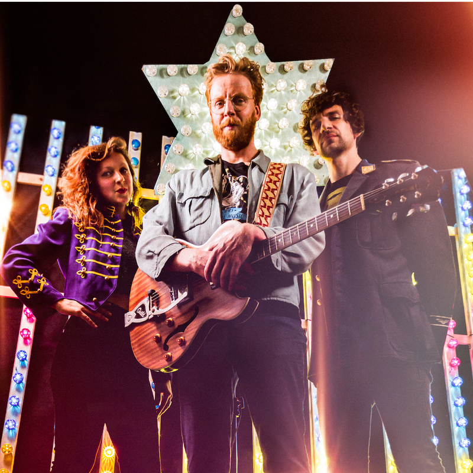

Jeroen Kant
Een eigenzinnige zanger, gitarist én liedjessmid, dat is Jeroen Kant in een notendop.

- Dag
- zaterdag
- Begin
- 15:45
- Einde
- 16:45
- Soort
- Show
- Locatie
- Brouwers
Jeroen Kant
Zijn sound is rauw, organisch, authentiek en uitgesproken, de boodschap van het liedje staat altijd voorop. Met wortels diep in de Amerikaanse muziekgeschiedenis en Nederlandstalige teksten van nú, brengt Jeroen Kant een divers repertoire naar RAUWKOST!
Jeroen Kant is een eigenzinnige en uitgesproken zanger/gitarist/liedjessmid. Begin 2020 verscheen zijn nieuwe EP "DIESEL". Opgenomen met zijn band bestaande uit bassiste Judith Renkema en drummer Jan Pohl. Samen vormen ze een energiek powertrio met de wortels diep in de Amerikaanse muziekgeschiedenis en met frisse Nederlandstalige teksten van nú. Je hoort The Black Keys, My Baby en Doe Maar. Maar ook ZZ Top, Daniel Lanois, Robert Cray en zelfs een beetje John Mayer. Op plaat steengoeie geproduceerde liedjes en live volop ruimte voor improvisatie. De kop alert in de wind. Levendig, toegewijd en frontaal!
Foto gemaakt door: Sasha Ivantic.


 Brouwers
Brouwers

Bij de Bossche Brouwers aan de Vaart gaat het er niet alleen tijdens RAUWKOST, maar het gehele jaar rauw aan toe. Vier bierfanaten startten een kroeg met een eigen bierbrouwerij, waar wekelijks bandjes kunnen spelen. Zing, mosh, huil, pit, lach, drink en bewonder!

Waar dan?